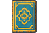
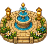

Higher-fidelity directions for a cozy 32-bit trainer overlay: richer surfaces, less NES blockiness,
bigger reading areas, and stronger connection to the island archway, courtyard, and collection loop.
Draft 1: Golden Arch Reading RoomMost magical
Al-Fatihah
Ayah 2 · Word focus
ٱلْحَمْدُ لِلّٰهِ رَبِّ ٱلْعَـٰلَمِينَ
Seeds +2

Egg 1/3
Feed 0
This version treats the trainer as a little sacred room inside the arch: warm, ceremonial, and reward-forward.
Draft 2: Courtyard Codex DeskBest product direction
Ayahs2
Seeds4
Egg1/3
ٱلْحَمْدُ لِلّٰهِ رَبِّ ٱلْعَـٰلَمِينَ
What does the highlighted word mean?
This keeps the actual learning calm and readable while making Quran progress feel collectible. It is the strongest base for the real app.
Draft 3: Lantern Trail AtlasMost game-like
1
2
3
4
5
CurrentAl-Baqarah
Next Egg2
Oasis3%
ذَٰلِكَ ٱلْكِتَـٰبُ لَا رَيْبَ فِيهِ

Focus
Trail
Seeds
Egg
This turns the Quran into an explorable atlas. Very fun, but it risks making the trainer feel busier than beginners need.